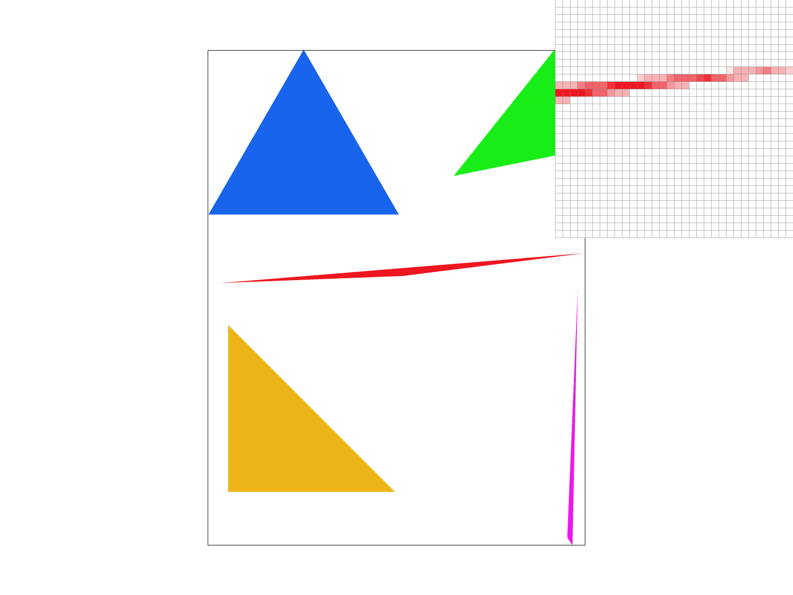
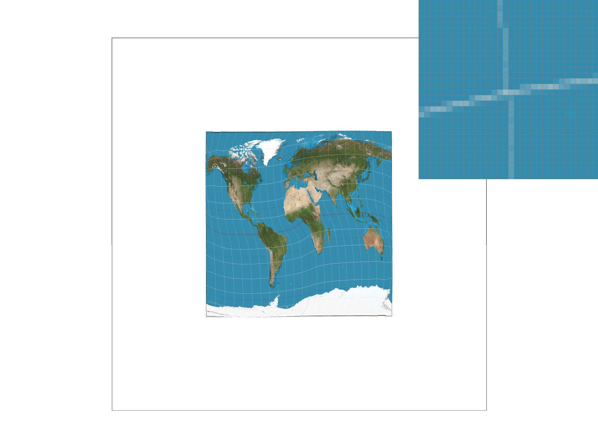
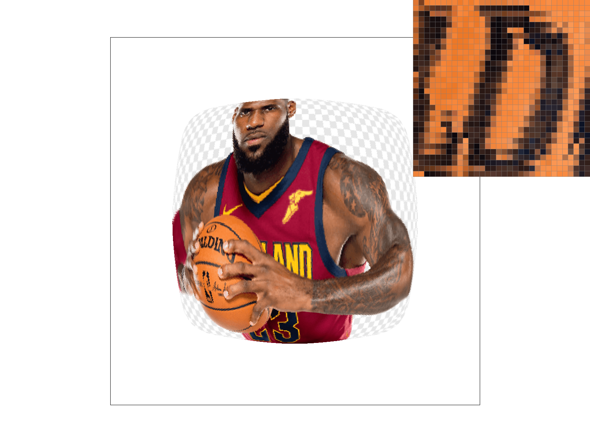
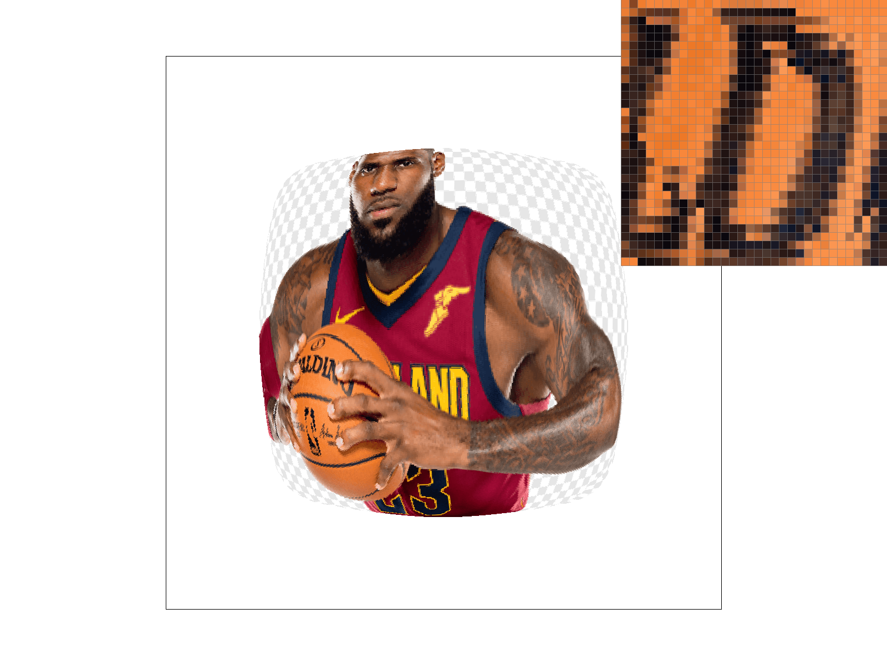

CS184/284A Spring 2025 Homework 1 Write-Up
Link to webpage: https://cal-cs184-student.github.io/hw-webpages-1a/hw1/index.html
Link to GitHub repository: https://github.com/cal-cs184-student/sp25-hw1-n

Overview
In this homework I implemented a rasterizer that can render vector graphics. Some of the available functionalities are point/line/triangle rasterization, supersampling (to prevent aliasing), texture mapping with nearest/bilinear sampling and level sampling, and transformations such as rotations and translations. I learned a lot about the rasterization pipeline, and enjoyed the opportunity to get my hands dirty with it. A lot of the pipeline was a black box to me, and most of it isn’t now. I found it interesting to see the tradeoffs between different sampling methods, and I really enjoyed creating my own transforms.Task 1: Drawing Single-Color Triangles
I first check whether the triangle is clockwise or counterclockwise. If it’s counterclockwise, I swap the first and third vertex, making the triangle clockwise.
I calculate whether the triangle is clockwise or counterclockwise with:
(x1-x0)*(y2-y1) - (x2-x1)*(y1-y0) < 0which was shown in discussion. It works by calculating the cross product of two edges.
The algorithm only searches through all x between min(x_i) and max(x_i) and all y between min(y_i) and max(y_i). The bounding box of the rectangle would have diagonal points on (min(x_i), min(y_i)), (max(x_i), max(y_i)), which means that my algorithm is no worse than one that checks each sample within the bounding box of the triangle.
In the double for loop, the algorithm at a high level is the following:
- Check if the point (accounting for +0.5 offset) is in the triangle (including the edges) by using barycentric coordinates.
- If it is, the pixel can be colored with the triangle’s color.
- Move on to the next pixel.
When implementing this, I initially had segfault errors when I zoomed in. I fixed this by adding bound checks before editing the sample buffer.

Task 2: Antialiasing by Supersampling
I wasn’t quite sure whether or not I should edit sample_buffer directly
(which would arguably break a layer of abstraction) or use fill_pixel instead,
but given the current design, I realised I had little choice in the matter,
and that I’d have to edit the sample buffer.
The algorithm is quite similar to the algorithm in task 1, but I added two more nested
for loops, which split each pixel up into sqrt(r) x sqrt(r) more pixels.
For each of these smaller pixels, I check whether they’re in the triangle or not using
methods described in task 1, and then fill the sample buffer accordingly.
Then, in resolve_to_frame_buffer, for each pixel, I calculate the average
colour amongst the sqrt(r) x sqrt(r) grid, and then fill the pixel with this colour.
Supersampling helps remove jaggies and is effective in anti-aliasing, but it is computationally expensive.
|
|
|
|

|
|
When the sampling rate is 1, we see that the edges are very pixelated, and the pixels aren't contiguous. When it's 4, we start to see some contiguity, but there are still jaggies, and edges aren't smooth. With a sample rate of 9 and 16, the edges start to look smooth, and there are fewer jaggies.
Task 3: Transforms
Task 4: Barycentric coordinates
Barycentric coordinates describe points in \( \mathbb{R}^2 \) as the interpolation of a triangle’s three vertices. Every point in \( \mathbb{R}^2 \) can be described as \( (\alpha, \beta, \gamma) \), where \( \alpha + \beta + \gamma = 1 \), and \( \alpha X_1 + \beta X_2 + \gamma X_3 = P \), where \( P \) is the point in question. If \( \alpha, \beta, \gamma \geq 0 \), a point must be inside the triangle.
I already used barycentric coordinates because of this property, so adding interpolation for colour was quite easy – I just had to weight each vertex’s colour by its respective barycentric coordinate.
Shown above is a circle and triangle where each colour is generated with barycentric coordinates. In the triangle, we can see that having different colours assigned to each vertex creates a smooth gradient of colours.
Task 5: "Pixel sampling" for texture mapping
Pixel sampling is when the color of a pixel is chosen by sampling from a texture image. Two methods were implemented: nearest neighbor and bilinear interpolation.
In nearest neighbor sampling, we find the nearest texel to the given \( (U, V) \) coordinates and choose its color. In bilinear interpolation, we blend the colors of the nearest four texels.
Nearest neighbor sampling is faster but can result in pixelated images, while bilinear interpolation improves on this but is slower.
For both methods, we first scale to \( u \) and \( v \) coordinates by multiplying by the dimensions of the texture map. For the nearest neighbor sampling, we simply get the nearest texel. For bilinear interpolation, we do the following:
Color c0 = c00 * (dy) + c01 * (1 - dy);
Color c1 = c10 * (dy) + c11 * (1 - dy);
return c0 * (dx) + c1 * (1 - dx);
|
|
|
|
|

|
At a sample rate of 1, comparing bilinear and nearest neighbour sampling, we see that there are very visible rectangles in nearest neighbour sampling, while this is not the case for nearest neigbhours sampling. When the sample rate is increased to 16, this is still the case, however it is less noticeable. We see that increasing the sample rate improves image quality, and the final result looks better with bilinear sampling.
Task 6: "Level Sampling" with mipmaps for texture mapping
Level sampling is used to determine the best mipmap level (resolution of the texture). It can be particularly helpful when an object is viewed at different scales (e.g., approaching the viewer). I implemented level sampling using mipmaps, which are precomputed versions of the original texture at different levels. We care about the mipmap level because it affects aliasing.
I used the implementation discussed in lecture/discussion, which involves estimating \(\frac{dv}{dx}, \frac{dv}{dy}, \frac{du}{dx}, \frac{du}{dy}\) and finding the correct mipmap level accordingly.
I implemented different sampling methods, such as always sampling from level 0, which is the original texture, the nearest mipmap
|

|
|
|

|
|
Additional Notes (please remove)
- You can also add code if you'd like as so:
code code code - If you'd like to add math equations,
- You can write inline equations like so: \( a^2 + b^2 = c^2 \)
- You can write display equations like so: \[ a^2 + b^2 = c^2 \]